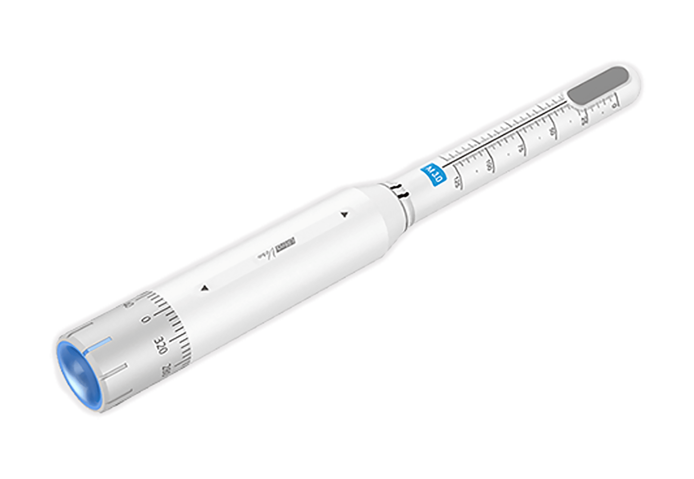
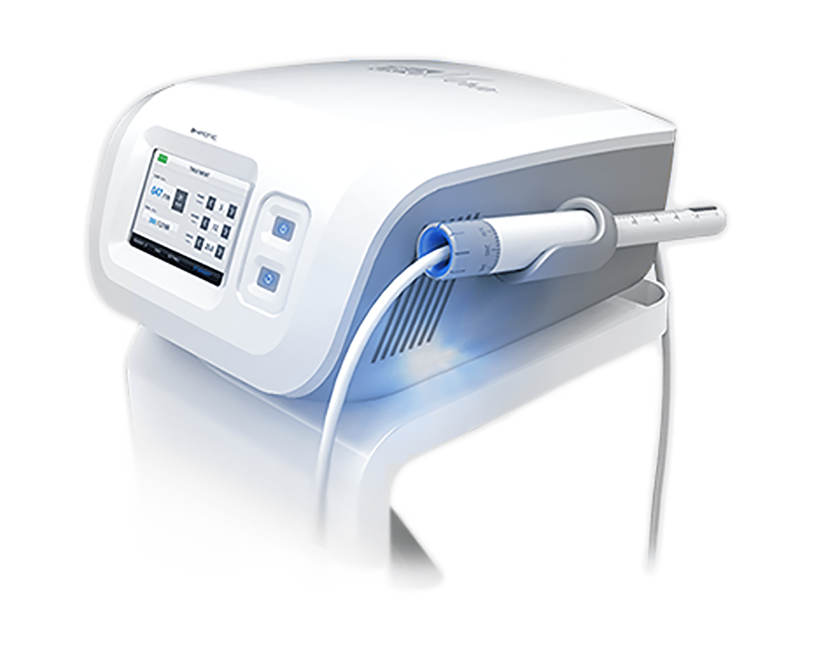
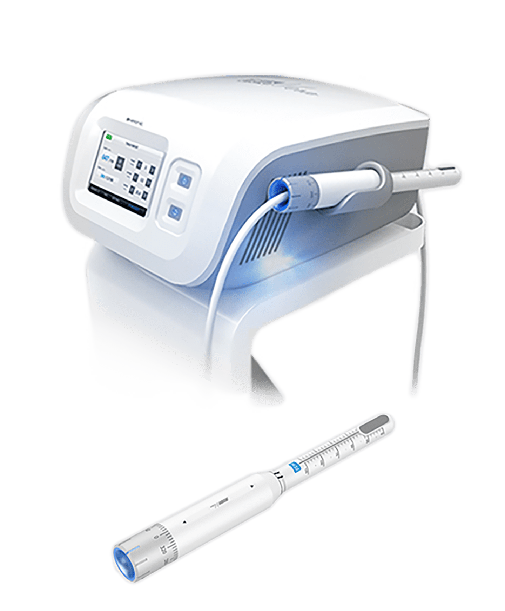
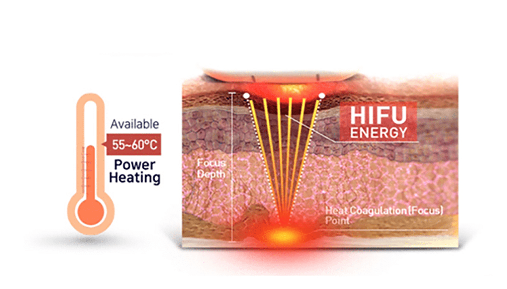
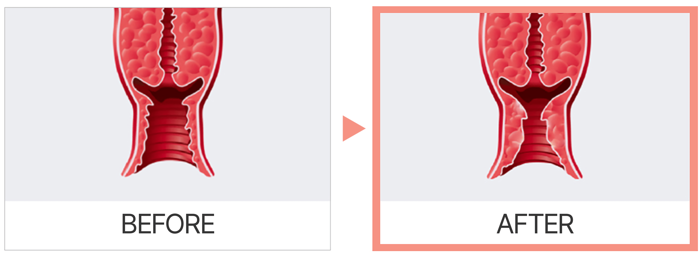
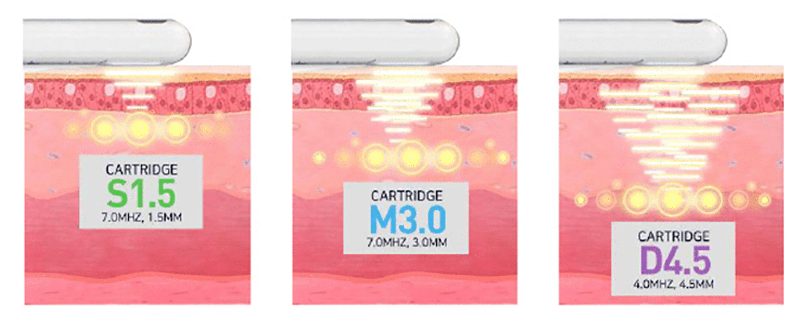

나를 위한
질쎄라 HIFU 질 리프팅
나를위한 산부인과의
“질쎄라 HIFU 질 리프팅”
은
의료진의 노하우와 기술력으로
질 근육 적정 깊이에 작용하는
HIFU 에너지로 두터운 질벽을 리프팅 하여
젊음을 되찾아주는 시술입니다
- 시술시간 20분 내외
- 회복기간 없음
- 입원여부 없음
-
마취방법
없음
(수면마취 가능)
질쎄라란?



인체에 무해한 집속 초음파(HIFU) 에너지를 조직 내에 조사하여
집중된 에너지 피부 표면을
거의 손상시키지 않고 적정 깊이로
초음파 에너지를 전달하여 콜라겐 합성을 촉진
하여
섬유 근육층의 수축을 발생시켜 질 내부가 타이트닝 되며
두꺼워지도록 도와줍니다.
질 점막 탄력성도 증가시키는 효과
를 얻을 수 있습니다.
질쎄라의 장점

인체에 매우 안전한 집속 초음파 에너지를 조직 내에
조사하여 생성된 열에너지가 질의 콜라겐 합성을
촉진하고 근육층 수축을 일으켜
질벽이 타이트해지고
두꺼워져 질이완 증상을 개선해 줍니다.
질쎄라의 시술 효과

-
질 위축증
건조증 개선 -
질 탄력 및
수축력 증가 -
성감 향상,
성 고통 감소 - 질 성형 효과
- 요실금 개선
-
질염, 골반염
예방 및 개선
질쎄라의 특징

-
절개 없이 레이저로 시술하여
출혈과 흉터가 적고 통증이 적음 -
회복을 위한 시간이 필요하지 않아
바로 일상생활 가능 -
섬세한 타겟팅 설정으로
질벽을 더욱 튼튼하고 두껍게 -
다른 시술과 복합 시술로
시너지 효과
질쎄라 대상자
-
출산 및 수술 후 질압이 떨어지신 분
-
질 내부가 건조해 통증을 느끼시는 분
-
질 탄력을 원하시는 분
-
성 관계 시 만족감이 덜하신 분
-
질 부위에 악취, 염증으로 고생이신 분
-
빠르고 티 안나는 질 타이트닝을 원하시는 분
질쎄라는 왜
나를위한 산부인과?


-
시술 경험이 풍부한
산부인과 전문의
직접 시술 -
비수술적인 방법으로
질 타이트닝 -
극대화된 성감
개선 효과 -
시술 후 바로
일상생활 가능 -
안전하고
빠른 시술
질 이완 진단기
를 통한
질압측정

나를위한 산부인과에서는 비비브 질타이트닝,
질 축소술, 질 필러 시술 등에 질압측정을 통한
비교 데이터를 제공해 드리고 있습니다.

프라이빗한 휴식 과 회복
나를위한산부인과에서는 치료를 받는
환자분들이
긴장을 완화하고 편안한
마음으로 쉬실 수 있도록
고급스럽고
편안한 분위기의 1인 회복실을 제공합니다.
레이저 질 타이트닝
시술 후 주의사항
시술 후 주의 사항은 개인 차가 있을 수 있습니다.
-
01
시술 직후 요도 및 점막 조직 자극으로 인한 빈뇨 증상이 일시적으로
생길 수 있습니다.
1주일 내로 자연스럽게 사라지는 증상이오니
걱정하지 마세요. -
02
시술 후 통증이 거의 없어 바로 일상생활이 가능하며, 운동도
제한 없이 하실 수 있습니다. -
03
성관계는 시술 후 바로 가능하지만, 하복부 불편감 혹은 소량의
출혈이 발생할 경우 3일 정도 관계를 피해주세요. -
04
시술 당일 사워, 탕 목욕 및 사우나는 바로 가능입니다.
-
05
점막의 위축이 심할 경우 시술 후 소량의 출혈이 생길 수 있으며,
이러한 증상이 있을 시 본원으로 연락 후
바로 내원하시어 경과를
보시기를 권장 드립니다. -
06
시술 후 음주, 흡연은 시술 결과에 악영향을 끼칠 수 있으니
피해주세요. -
07
시술 후 1주일간 탐폰, 음주, 탕 목욕, 자전거 운동과 같이 시술 부위를
자극할 수 있는 행위는 피해주시고
흡연과 음주는 안정적인 필러
안착을 위해 삼가해주세요.